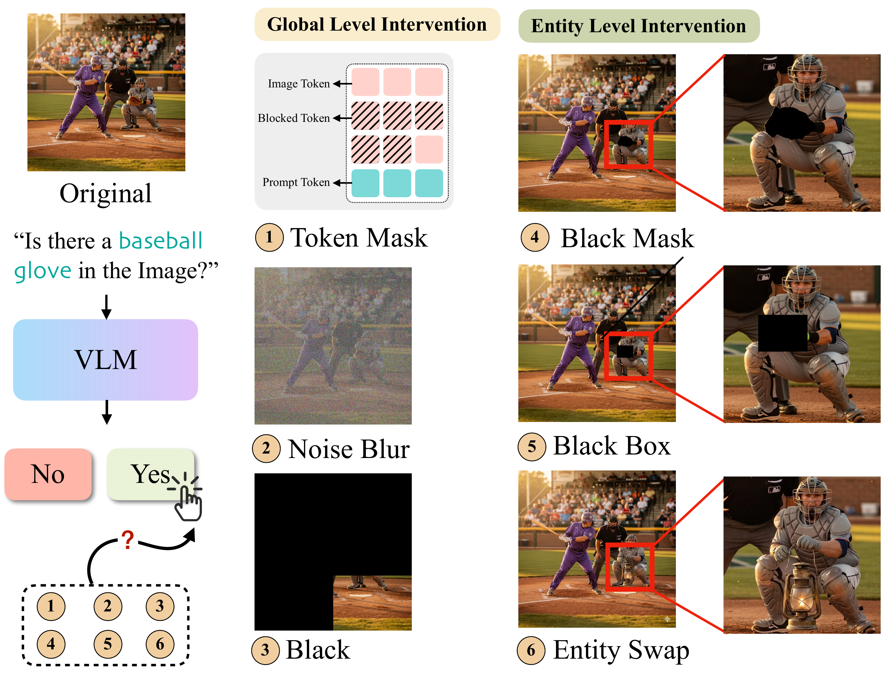
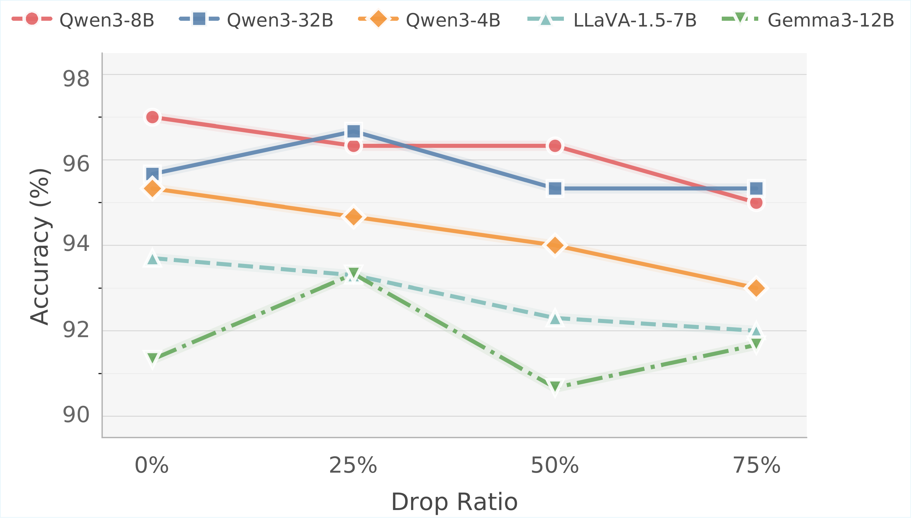
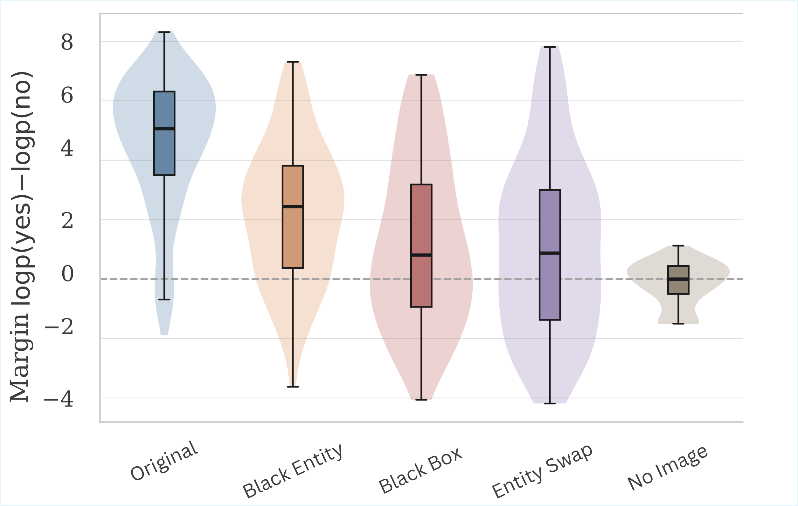
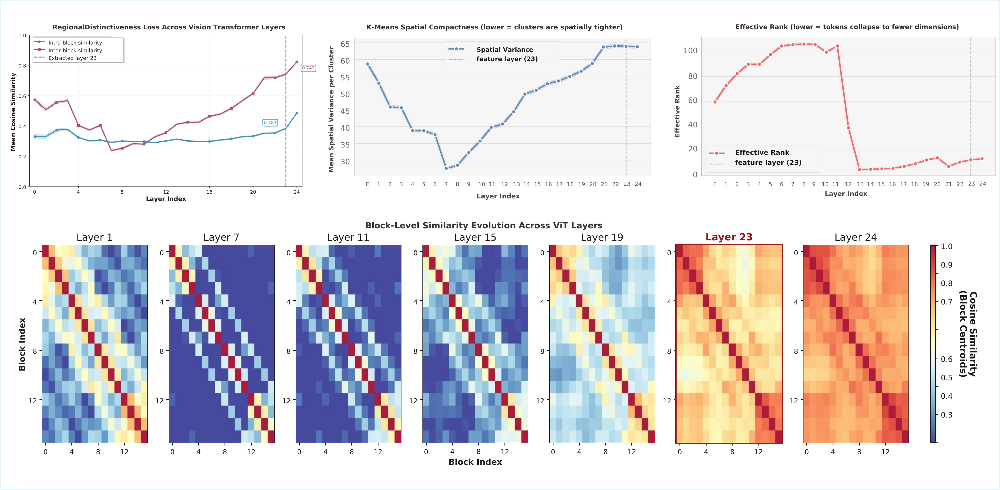

Seeing without Looking:
Do Vision-Language Benchmarks Really Test Vision?
Abstract
Benchmark accuracy is often implicitly assumed to reflect grounded visual understanding in vision-language models (VLMs), yet it remains unclear to what extent such scores truly reflect reliance on visual evidence. Motivated by a surprising observation that removing a substantial fraction of image tokens only degrades model performance very slightly on a widely used hallucination benchmark, we systematically investigate this mismatch in a set of open-source VLMs. Our analysis spans multiple levels of granularity, spanning global visual degradation, localized occlusion, question reformulation, answer-space expansion, and decision-level analyses beyond standard accuracy. We further complement these behavioral results with a layer-wise analysis of vision-token geometry. Throughout the experiments, we find that although VLMs do incorporate visual input, their predictions are less sensitive to the loss of fine-grained visual evidence than standard accuracy would suggest. Even when the final prediction remains unchanged, the model's internal support for the correct answer may already be weakened. A representation-level analysis shows increasing similarity among visual tokens in deeper layers, providing a possible explanation for our findings. Together, these results suggest that current benchmarks are not sufficient to reliably evaluate fine-grained visual grounding in VLMs.
Overview

Vision Is Not Needed
On POPE, randomly removing a substantial fraction of image tokens produces surprisingly little degradation in accuracy.

Key observation
For Qwen3-4B and LLaVA-1.5-7B, accuracy falls by only about 3% even when 75% of image tokens are randomly removed. Qwen3-32B and Gemma3-12B do not exhibit a monotonic decline, and both slightly outperform their baselines at a 25% drop ratio. If benchmark scores remain stable under such severe visual degradation, how well do they reflect a model’s reliance on visual evidence?
Global-Level Visual Interventions
We intervene directly on the input image before visual encoding: No Image removes the image entirely, Black occludes part of the image, and Blur mixes the image with random noise.
| Model | Normal | No Image | Black p = 0.5 | Black p = 0.75 | Blur p = 0.5 | Blur p = 0.75 |
|---|---|---|---|---|---|---|
| Qwen3-VL-32B | 0.96 | 0.50 | 0.87 | 0.81 | 0.89 | 0.60 |
| InternVL3-8B | 0.98 | 0.50 | 0.86 | 0.80 | 0.93 | 0.71 |
| Qwen3-VL-8B | 0.97 | 0.50 | 0.86 | 0.78 | 0.91 | 0.71 |
| Gemma-3-12B | 0.94 | 0.57 | 0.89 | 0.80 | 0.78 | 0.54 |
| Qwen3-VL-4B | 0.95 | 0.50 | 0.87 | 0.77 | 0.90 | 0.65 |
| LLaVA-1.5-7B | 0.94 | 0.50 | 0.87 | 0.76 | 0.90 | 0.72 |
| Molmo-7B-D-0924 | 0.95 | 0.51 | 0.85 | 0.77 | 0.92 | 0.75 |
| Model | Normal | No Image | Black p = 0.5 | Black p = 0.75 | Blur p = 0.5 | Blur p = 0.75 |
|---|---|---|---|---|---|---|
| Qwen3-VL-32B | 0.90 | 0.51 | 0.79 | 0.72 | 0.78 | 0.73 |
| InternVL3-8B | 0.88 | 0.48 | 0.79 | 0.71 | 0.77 | 0.70 |
| Qwen3-VL-8B | 0.89 | 0.47 | 0.77 | 0.69 | 0.76 | 0.70 |
| Gemma-3-12B | 0.84 | 0.46 | 0.74 | 0.68 | 0.70 | 0.66 |
| Qwen3-VL-4B | 0.86 | 0.47 | 0.76 | 0.68 | 0.75 | 0.70 |
| LLaVA-1.5-7B | 0.77 | 0.38 | 0.69 | 0.65 | 0.69 | 0.64 |
| Molmo-7B-D-0924 | 0.82 | 0.47 | 0.69 | 0.64 | 0.70 | 0.64 |
| Model | Normal | No Image | Black p = 0.5 | Black p = 0.75 | Blur p = 0.5 | Blur p = 0.75 |
|---|---|---|---|---|---|---|
| Qwen3-VL-32B | 0.92 | 0.54 | 0.86 | 0.81 | 0.85 | 0.81 |
| InternVL3-8B | 0.89 | 0.56 | 0.82 | 0.78 | 0.82 | 0.80 |
| Qwen3-VL-8B | 0.88 | 0.52 | 0.81 | 0.76 | 0.84 | 0.79 |
| Gemma-3-12B | 0.83 | 0.56 | 0.78 | 0.74 | 0.75 | 0.73 |
| Qwen3-VL-4B | 0.81 | 0.51 | 0.75 | 0.70 | 0.76 | 0.73 |
| LLaVA-1.5-7B | 0.80 | 0.50 | 0.73 | 0.69 | 0.74 | 0.72 |
| Molmo-7B-D-0924 | 0.79 | 0.51 | 0.71 | 0.66 | 0.74 | 0.71 |
Accuracy across seven models under global visual interventions. Higher is better.
Under No Image, performance drops toward chance level, confirming that the models are not independent of visual input. Under Black and Blur, however, accuracy decreases disproportionately little relative to the severity of corruption, with most models remaining well above chance across all three benchmarks. Benchmark accuracy is therefore less sensitive to severe visual degradation than the intervention itself would suggest.
Entity-Level Visual Interventions
Global degradation cannot reveal whether a model relies on the specific visual evidence named in the question. We therefore remove the queried entity with a precise Black Mask, occlude its local region with a Black Box, or replace it with an unrelated object through Entity Swap.
Yes Rate ↓ · Lower is better after the queried entity is removed.
| Model | Original | Black Mask | Black Box |
|---|---|---|---|
| Qwen3-VL-32B | 0.96 | 0.90 | 0.74 |
| InternVL3-8B | 0.97 | 0.80 | 0.57 |
| Qwen3-VL-8B | 0.99 | 0.94 | 0.84 |
| Gemma-3-12B | 0.96 | 0.83 | 0.59 |
| Qwen3-VL-4B | 0.93 | 0.75 | 0.44 |
| LLaVA-1.5-7B | 0.97 | 0.87 | 0.71 |
| Molmo-7B-D-0924 | 0.94 | 0.67 | 0.46 |
| Model | Original | Black Mask | Black Box |
|---|---|---|---|
| Qwen3-VL-32B | 0.90 | 0.80 | 0.74 |
| InternVL3-8B | 0.88 | 0.77 | 0.71 |
| Qwen3-VL-8B | 0.89 | 0.73 | 0.68 |
| Gemma-3-12B | 0.84 | 0.74 | 0.67 |
| Qwen3-VL-4B | 0.86 | 0.73 | 0.69 |
| LLaVA-1.5-7B | 0.77 | 0.68 | 0.65 |
| Molmo-7B-D-0924 | 0.82 | 0.66 | 0.60 |
| Model | Original | Black Mask | Black Box |
|---|---|---|---|
| Qwen3-VL-32B | 0.83 | 0.59 | 0.28 |
| InternVL3-8B | 0.83 | 0.64 | 0.40 |
| Qwen3-VL-8B | 0.85 | 0.65 | 0.41 |
| Gemma-3-12B | 0.79 | 0.59 | 0.45 |
| Qwen3-VL-4B | 0.80 | 0.60 | 0.35 |
| LLaVA-1.5-7B | 0.74 | 0.48 | 0.20 |
| Molmo-7B-D-0924 | 0.82 | 0.54 | 0.27 |
Yes Rate under entity-level occlusion. Lower is better for Black Mask and Black Box.
Both interventions reduce the Yes Rate, confirming that models use question-relevant local evidence. Black Box consistently causes a larger drop than Black Mask, showing that predictions also draw support from the surrounding local context. Yet even when the entity itself is completely removed, many models continue to answer Yes.
Counterfactual Test: Entity Swap
We replace the queried entity with an unrelated object while keeping the question unchanged. The correct answer should always be No, so the ideal Yes Rate is 0.
| Model | Yes Rate ↓ |
|---|---|
| LLaVA-1.5-7B | 0.63 |
| Gemma-3-12B | 0.50 |
| InternVL3-8B | 0.37 |
| Qwen3-VL-32B | 0.35 |
| Qwen3-VL-8B | 0.34 |
| Qwen3-VL-4B | 0.27 |
All models remain above the ideal value of zero, indicating that their predictions do not update sufficiently when the queried entity is semantically replaced. Models use local visual evidence, but their predictions are not tightly anchored to the queried entity itself.
Decision Margin Analysis

Accuracy records only whether the final Yes/No prediction changes. To test whether visual interventions weaken the model’s internal support before changing its answer, we analyze the first-token decision margin, Δ = log p(yes) − log p(no). The Original condition has the largest positive margins, while No Image approaches the decision boundary. Black Entity, Black Box, and Entity Swap all reduce affirmative support, confirming that local evidence affects the decision. However, their distributions remain substantially above No Image: even after the queried entity is removed or replaced, broader scene-level cues can continue to sustain a Yes prediction. The final answer may remain unchanged even when the evidence supporting it has weakened substantially.
Representational Analysis

The decision-margin results show that removing local evidence weakens affirmative support, but often not enough to change the final prediction. To understand why fine-grained evidence exerts such limited control over the answer, we examine whether spatial information remains distinguishable across the vision encoder. In early layers, visual tokens from the same spatial region remain more similar than tokens from different regions, with local structure strongest around Layers 7–9. Deeper in the encoder, inter-block similarity approaches intra-block similarity, spatial clusters become less compact, and effective rank drops sharply after approximately Layer 12. By Layer 23, the block-similarity map is nearly uniform. Across directional alignment, spatial separability, and representational dimensionality, the same pattern emerges: fine-grained spatial distinctions progressively fade with depth.
Discussion
Across global degradation experiments, substantial corruption of the visual input produces only minor drops in benchmark accuracy, suggesting that coarse scene-level cues are often sufficient to sustain correct predictions. Entity-level interventions make this limitation more explicit: even after the queried entity is removed or replaced, models frequently remain affirmative because surrounding context can substitute for direct evidence of the entity itself. Decision-margin analysis confirms that local evidence affects internal support, while the representational analysis shows how fine-grained spatial distinctions progressively fade in deeper encoder layers. If a model can produce the expected answer without perceiving the queried entity, top-1 accuracy alone cannot faithfully measure visual grounding and may misrepresent progress in hallucination mitigation, visual-token pruning, and grounding. Evaluation should therefore test whether predictions respond appropriately when the relevant visual evidence changes. Correct predictions on current benchmarks often do not require precise visual evidence.